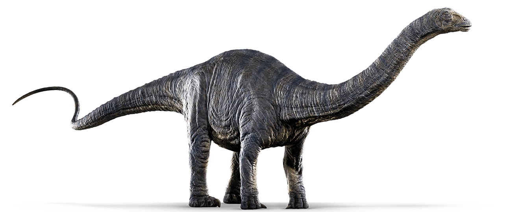

Apatosaurus is a dinosaur which lived approximately 150
million years ago during the Jurassic Period. This dinosaur
was first discovered in 1877 by Othniel Charles Marsh and was
promptly named Apatosaurus ajax. In 1917, a second specimen was
found and it was named Apatosaurus louisae. Since then, several
specimens have been found in parts of Colorado, Oklahoma and Utah.
The name Apatosaurus means “deceptive lizard”. It was given this name by Othniel
Charles Marsh because its bones resembled the bones of other dinosaurs, particularly Mosasaurs.
While it was alive, Apatosaurus was gigantic.
It was about 90 feet long, about 15 feet tall at the hips
and weighed approximately 38 tons. Thankfully, this animal was a herbivore,
which means that it diet consisted of mainly leaves and other plant material.
It had chisel like teeth that could quickly remove the leaves from branches, but it
didn’t chew up the plant material with its teeth. No, scientists now believe that these
animals swallowed stones to help them grind up plant material in their stomachs.
Rocks used in this way are called gizzard stones or gastrolithes.
Computer simulations have concluded that these dinosaurs
could move their tails like bull whips, meaning that they could
make a cracking sound with them by whipping them at high velocicity.
These computer simulations have estimated that if these dinosaurs could
indeed crack their massive tails, then it would have been louder than the firing of a cannon.
It would have been useless however, as a weapon and most likely would have been used for other purposes.
Most people refer to the Apatosaurus as the Brontosaurus.
That’s because of a naming error that occurred early on in the
discovery of these dinosaurs. The first one was named Apatosaurus,
but one that was found later was called Brontosaurus. The public latched on
to the name Brontosaurus however, and it stuck. Unfortunately, according to
scientific convention the oldest name is the proper name to use.